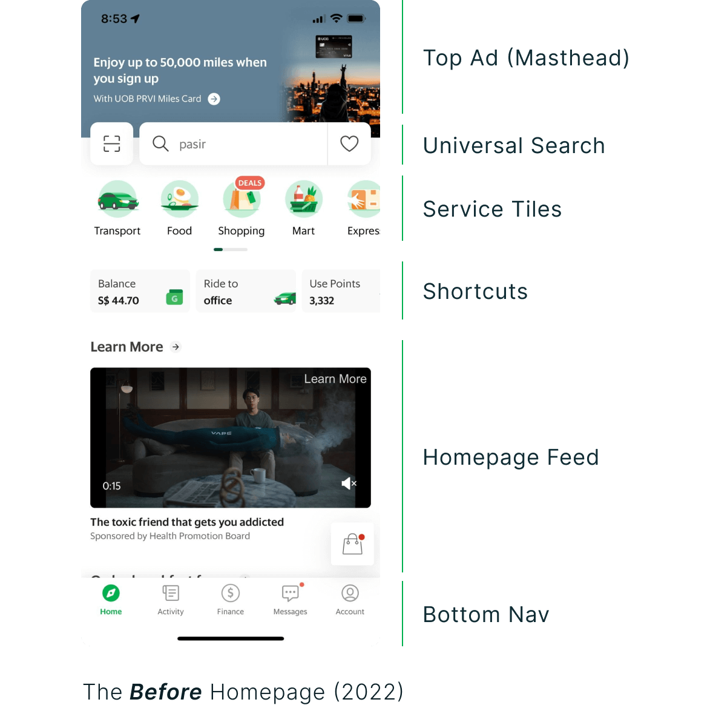
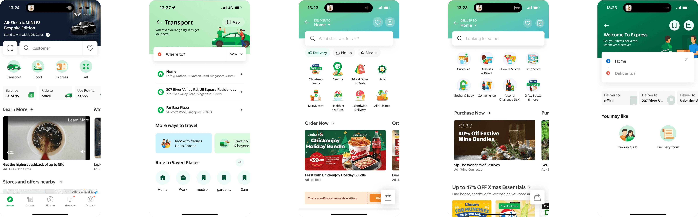
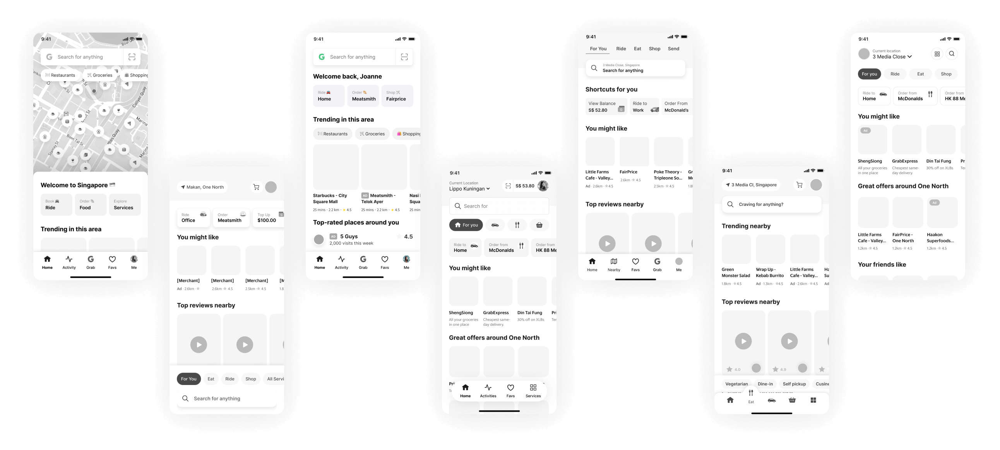
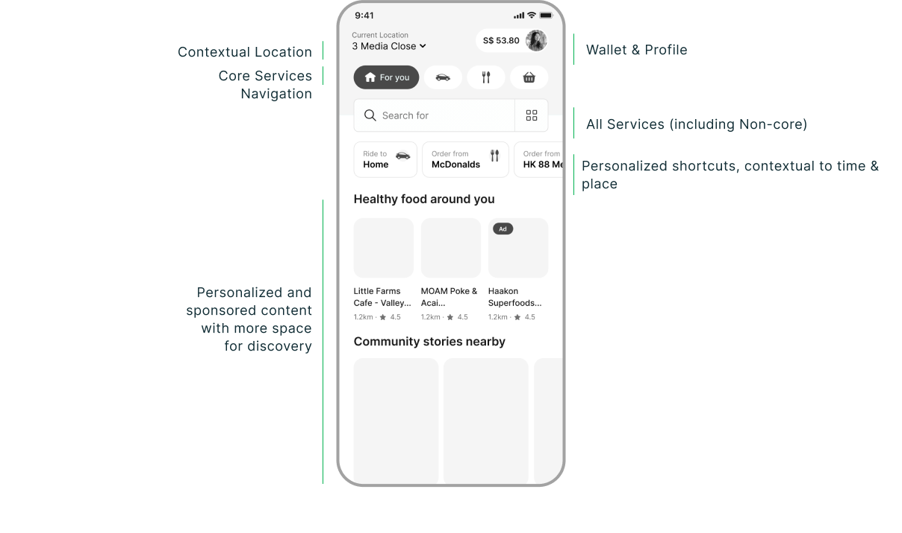
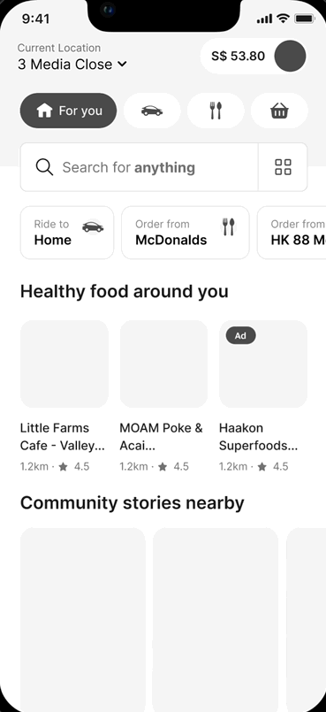
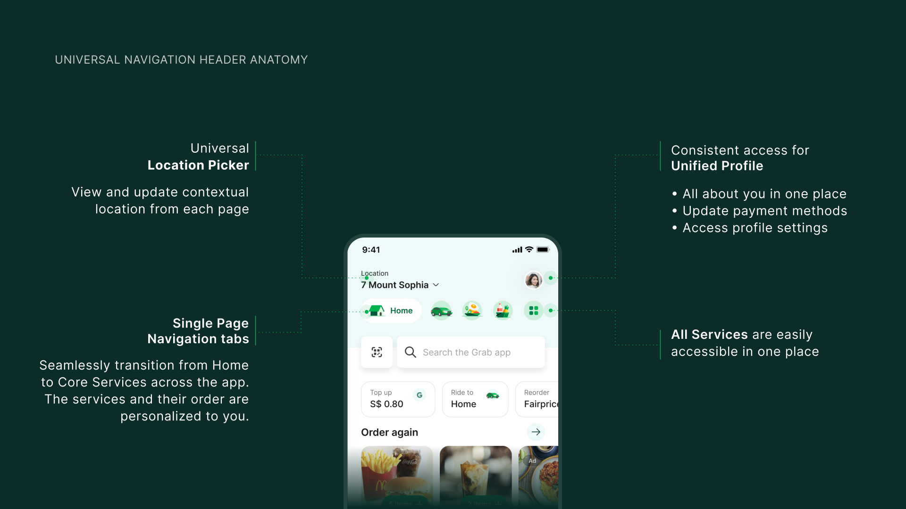
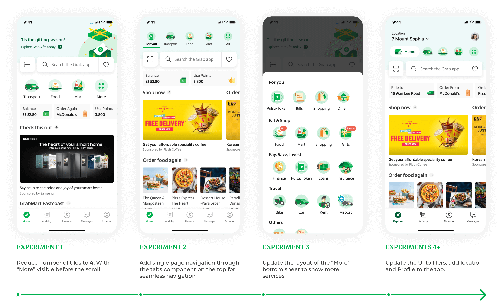
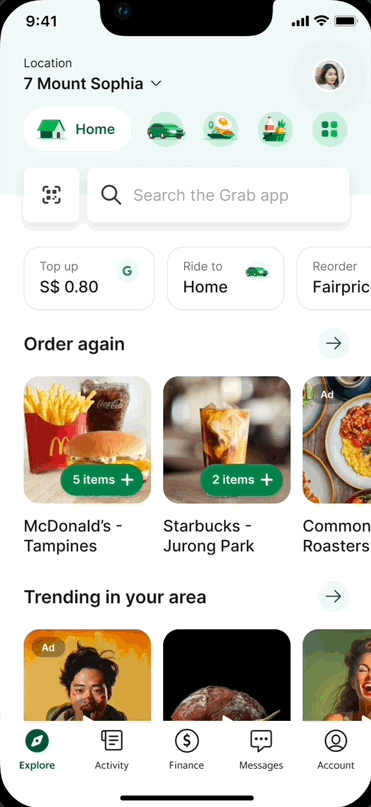

03 / Grab · 2023
Reimagining the Grab homepage for 187+ million users
Grab is Southeast Asia’s super app. People book rides, order food and groceries, send parcels and pay from it, in more than ten languages. Almost all of it starts on one screen: the homepage.
I spent four years at Grab while living in Singapore, and grew from product designer to senior and then lead product designer. As a lead, I was trusted with the biggest screen in the app: the homepage.
I was the lead designer on its redesign, from the first workshop to implementation. Along the way I worked with product designers from other teams, user researchers and product managers. Every service in the app shares that one screen, and each team behind it wants a spot on it, so most of the job was getting them to agree on one design. Here’s how that went.
Everyone wanted a tile
Every new service wanted a spot on the homepage, and nothing decided who got one or where. So each service asked for its own tile, and then the business units argued about the order.
The homepage had 14 functions and more than 20 ways in. Meanwhile 70% of taps went to the same three tiles.

The tiles weren’t helping anyone find something new, either. Depending on the country, 94–99% of people only ever used the top three services. Fewer than 20% scrolled past the big ad to the feed, partly because they didn’t know anything was down there.
Each service’s own homepage looked like a different app, so people had to relearn the UI every time they switched. And each team kept rebuilding the same components slightly differently.

Getting everyone in one room
Before designing anything, I ran a three-day design sprint with designers, engineers, analysts and some of our leadership. We shared the problem and the data, split into teams, sketched divergent ideas and got feedback from the leads.
It meant the vision had support before there was a single screen to argue about.
Thirty directions, eight tested
I explored more than 30 directions for how the homepage could be organised, and we tested 8 of them with people in Singapore and Indonesia.

Three findings changed the design. People split into two camps, search first and service first, so the homepage had to work for both. Shortcuts gave people a sense of relief and familiarity, so they stayed. And search at the bottom of the screen was less reachable than we thought.
Services as tabs
The structure we landed on moves the core services into tabs at the top. All services sit one tap away, next to search. Shortcuts change with the time and place, and the space below finally has room for discovery.

The tabs also let people move between Home, Transport, Food and Mart without leaving the page. The content below the top bar changes, and the structure around it stays put.

The header is the part every page shares: the location picker, the service tabs, the profile and all services.

Shipping it without shocking anyone
Once the structure was approved, we shipped it as experiments, one hypothesis at a time, and I iterated on the designs as results came in.

Putting the core services first worked. Conversion went up 0.09pp, and the services that moved behind “More” didn’t get lost: clicks on the More page went up 5pp, and impressions of the other services went up 9.5%.
Muscle memory was harder to beat. People who knew the old layout converted 0.2pp less with the new tabs. But the tabs gave the homepage more room, and search adoption went up 3.5pp and feed engagement 3.6pp.
New users had no trouble at all. Their conversion didn’t drop, and they used universal search (+0.04pp), the feed (+0.94pp) and shortcuts (+0.87pp) more.
So we wanted to ship the parts we believed in most, without changing so much at once that people churned. I designed an in-between version. It keeps familiar things like the service tiles, and still gets single-page navigation and more room for discovery.
People also needed to find their way around the new layout. Only one tooltip shows up unprompted. The rest appear when someone reaches for the old place, like tapping where Profile used to be, and are gone by the next session.

One app again
The redesign set the direction for every core service’s homepage, and got them onto Grab’s new design system along the way. People learn the structure once, and teams reuse the same components instead of rebuilding them.
Where I left it
By the time I left, the project had taken more than 13 months, 30+ iterations, 5+ experiments, 10+ meetings with execs and 20+ design jams.
I left while we were still running experiments, before the full redesign shipped, so this page shows the vision and the first rounds of experiments, not a launch. The results so far were promising enough that we expected the full redesign to raise transactions and discovery on the homepage.
A homepage this big never stops changing, and Grab’s has been through several versions since. What I didn’t expect was to see Uber move its app to service-first navigation later on, the same direction we landed on here. It still uses it today.
What I’d tell myself
Align early. Run the workshop before the first design, and bring leadership and the cross-functional teams into it. People back a solution they helped make.
Watch new users’ data. People who knew the old homepage need time to get used to the new one. New users never saw the old one, so their numbers show what the design can do without the shock of change.
Get to the vision design as soon as you can. Small experiments answer one question at a time, but they can’t tell you if the whole thing works. Only the full design in people’s hands can.